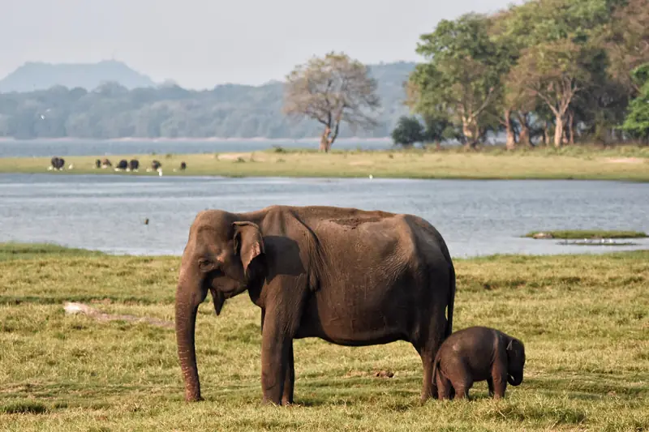
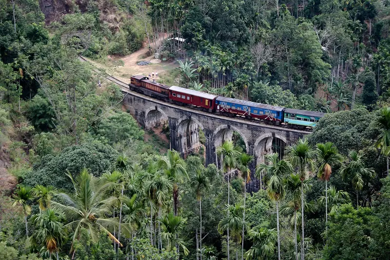
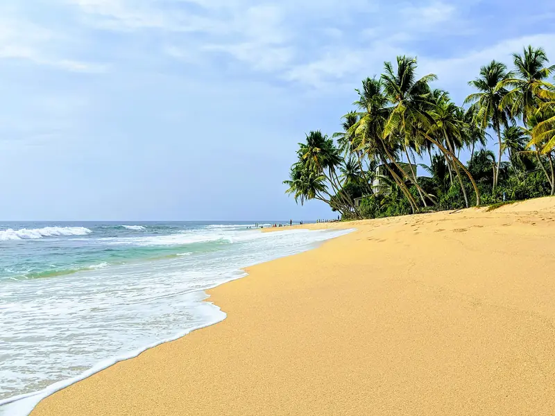
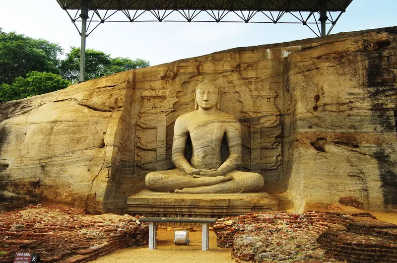
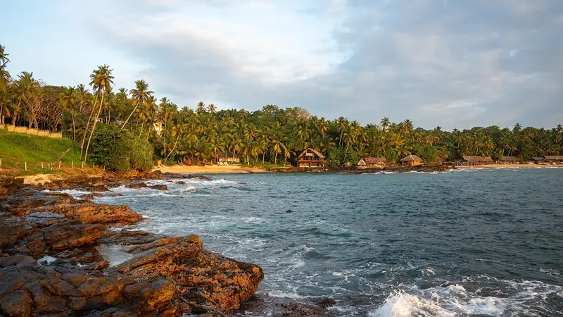

Things to do in Sri Lanka
Pick the experiences that matter to you. The planner adds them to the right place on your route and tells you if a day gets too full.
Wildlife safaris
Jeep safaris start at dawn or in the late afternoon, when animals are most active. Udawalawe is best for elephants, Yala for leopards, and Minneriya for large herds from July to October. A safari is never a guarantee of any animal.
- Minneriya or Kaudulla jeep safariSigiriya, 3.5 h, about US$48 per adult (sample)
- Udawalawe jeep safariUdawalawe, 4 h, about US$55 per adult (sample)
- Elephant Transit Home feedingUdawalawe, 1 h, about US$8 per adult (sample)
- Yala jeep safari, half dayYala, 5 h, about US$70 per adult (sample)
- Whale watching boat tripMirissa, 5 h, about US$55 per adult (sample)

Scenic train journeys
The line from Kandy through Nanu Oya to Ella climbs through tea estates and cloud forest. It is slow, about seven hours end to end, and many people ride one section only. Your driver can meet you at the other end with the luggage. Cyclone Ditwah closed the line in late 2025. The stretch from Nanu Oya through Ella to Badulla reopened in June 2026, so check the current service before you book.
Add to a trip in the planner
Tea estates
Visit a working factory around Nuwara Eliya or Ella, walk between the rows with a guide, and taste fresh Ceylon tea. Some estates have bungalows you can stay in.
- Tea factory tour and tastingNuwara Eliya, 2 h, about US$8 per adult (sample)

Beaches and surfing
The south and west coasts are best from December to April. The east coast and Arugam Bay are best from about May to September. Weligama has gentle waves for a first lesson.
- Surf lesson at WeligamaMirissa, 2 h, about US$25 per adult (sample)
- Turtle snorkelling tripMirissa, 2 h, about US$20 per adult (sample)
- Jungle Beach and Japanese Peace PagodaGalle, 3 h, free
- Pigeon Island snorkellingTrincomalee, 4 h, about US$45 per adult (sample)

Culture and heritage
Eight UNESCO World Heritage Sites cover ancient cities, temples, Galle Fort, the central highlands and Sinharaja. Dress with shoulders and knees covered at temples and take off shoes and hats.
- Climb Sigiriya RockSigiriya, 3 h, about US$35 per adult (sample)
- Dambulla cave templeSigiriya, 2 h, about US$10 per adult (sample)
- Polonnaruwa ancient city by bicycleSigiriya, 5 h, about US$35 per adult (sample)
- Temple of the Sacred Tooth RelicKandy, 2 h, about US$15 per adult (sample)
- Kandyan dance showKandy, 1 h, about US$8 per adult (sample)
- Kataragama evening ceremonyYala, 2 h, free
- Galle Fort walking tourGalle, 2.5 h, about US$15 per adult (sample)
- Koneswaram temple and Swami RockTrincomalee, 1.5 h, free
Sri Lankan food
Rice and curry, hoppers, kottu and fresh fish. A cooking class in a village or a home is one of the easiest ways to understand the food. Tell us about allergies or diets when you plan.
- Village cooking lunchSigiriya, 3 h, about US$25 per adult (sample)
- Sri Lankan cooking classElla, 3 h, about US$22 per adult (sample)

Wellness and slow travel
Ayurveda retreats, yoga by the sea and longer stays in one place. Add an extra night anywhere you like. The planner shows how the pace changes each day.
Add to a trip in the planner